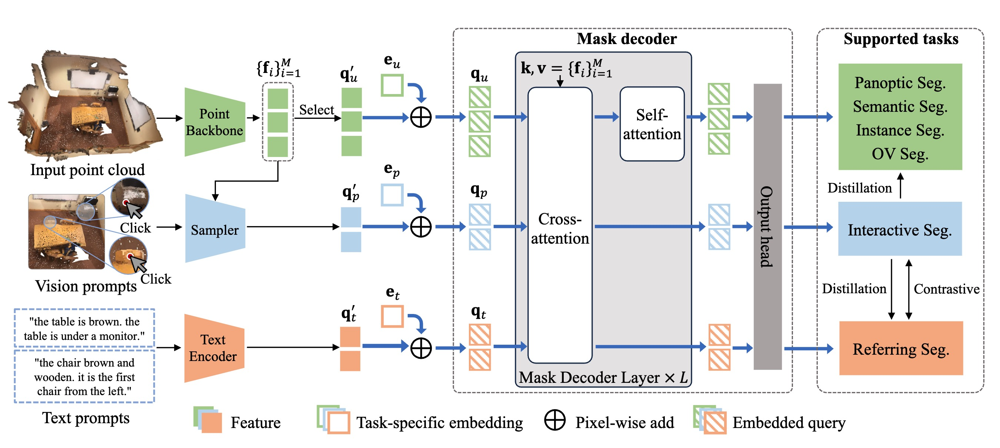

Dingkang Liang (梁定康)
Ph.D student
Github |
Google Scholar |
Huazhong University of Science and Technology
Email: dkliang@hust.edu.cn
Brief Bio
I received my Ph.D. degree from Huazhong University of Science and Technology in 2025, supervised by Prof. Xiang Bai.
My research interests mainly lie in Embodied AI, 3D Vision, World Model and Dense Object Analysis.
I was selected for the Youth Student Fundamental Research Project from NSFC (首批国家自然科学基金博士生项目入选者) and the Young Elite Scientists Sponsorship Program-Doctoral Student Special Plan from CAST (首批中国科协青年人才托举工程-博士生专项入选者), with a total funding of 340,000 RMB (~ 47,000 USD). Additionally, I have won multiple championships in top-tier computer vision competitions, which earned me a prize of 200,000 RMB (~ 28,000 USD).
I am open to research collaborations and internship opportunities. I have also mentored several undergraduate and graduate students who successfully published their work in top-tier conferences and journals. Please feel free to reach out to me via Email (dkliang@hust.edu.cn) or WeChat (liangdingkang)
I was selected for the Youth Student Fundamental Research Project from NSFC (首批国家自然科学基金博士生项目入选者) and the Young Elite Scientists Sponsorship Program-Doctoral Student Special Plan from CAST (首批中国科协青年人才托举工程-博士生专项入选者), with a total funding of 340,000 RMB (~ 47,000 USD). Additionally, I have won multiple championships in top-tier computer vision competitions, which earned me a prize of 200,000 RMB (~ 28,000 USD).
I am open to research collaborations and internship opportunities. I have also mentored several undergraduate and graduate students who successfully published their work in top-tier conferences and journals. Please feel free to reach out to me via Email (dkliang@hust.edu.cn) or WeChat (liangdingkang)
News
11 / 2025: I successfully defended my Ph.D. thesis
11 / 2025: One paper is accepted by AAAI 2026 (oral)
10 / 2025: I'm awarded National Scholarship
09 / 2025: One paper is accepted by IEEE TPAMI
09 / 2025: Two papers are accepted by NeurIPS 2025
09 / 2025: I was selected for the ICCV 2025 Doctoral Consortium
07 / 2025: One paper is accepted by IEEE TPAMI
07 / 2025: One paper is accepted by ACM MM 2025
06 / 2025: Two papers are accepted by ICCV 2025
05 / 2025: Outstanding reviewer (6%) at CVPR 2025
04 / 2025: TransCrowd is selected as an Outstanding Paper (3.4%) in Science China Information Science (CCF A).
04 / 2025: We win 2nd place in SoccerNet Challenges on the Monocular Depth Estimation Track (CVPR 2025).
04 / 2025: I give a talk about VLM-based Driving Models in VOYAH company.
03 / 2025: I give a talk about 3D vision in CSIG Sharing Forum.
02 / 2025: Three papers are accepted by CVPR 2025
01 / 2025: One paper is accepted by ICLR 2025
01 / 2025: I was supported by the Young Elite Scientists Sponsorship Program-Doctoral Student Special Plan by CAST ( 首批中国科协青年人才托举工程-博士生专项), which is a grant of 40,000 RMB (~ 5,500 USD).
09 / 2024: I'm awarded National Scholarship
09 / 2024: I give a talk about dense object analysis in CSIG Student Member Sharing Forum.
09 / 2024: Three papers are accepted by NeurIPS 2024
09 / 2024: We win 1st place in the ECCV 2024 FishNet Classification Challenge.
08 / 2024: We win 2nd place in The First Dataset Distillation Challenge (ECCV 2024) on the Fixed IPC Track.
07 / 2024: One paper is accepted by ECCV 2024
04 / 2024: I was supported by the Youth Student Fundamental Research Project from NSFC ( 首批国家自然科学基金博士生项目), which is a grant of 300,000 RMB (~ 41,700 USD).
03 / 2024: FIDTM is selected as an ESI Highly Cited Paper (Top 1% of papers in the academic field)
02 / 2024: One paper is accepted by CVPR 2024
09 / 2023: Outstanding reviewer (1.5%) at ICCV 2023
09 / 2023: One paper is accepted by NeurIPS 2023
09 / 2023: TransCrowd is selected as an ESI Highly Cited Paper (Top 1% of papers in the academic field)
07 / 2023: One paper is accepted by ICCV 2023
03 / 2023: Two papers are accepted by CVPR 2023
01 / 2023: One paper is accepted by ICRA 2023
09 / 2022: Guided graduate students win 1st place in the VisDrone2022 (PRCV) challenge on the Crowd Counting Track.
08 / 2022: One paper is accepted by IEEE TMM
06 / 2022: Two papers are accepted by ECCV 2022
03 / 2022: We released the first comprehensive public African text dataset [project]
10 / 2021: I'm awarded National Scholarship
10 / 2021: One paper is accepted by IJCV
09 / 2021: We win 1st place in The VisDrone2021 (ICCV) Challenge on the Crowd Counting Track.
09 / 2020: We win 1st place in The VisDrone2020 (ECCV) Challenge on the Crowd Counting Track.
11 / 2019: We win 1st place in The CV101 (held by Extremevision and Intel), obtaining 180,000 RMB Bonus.
11 / 2025: One paper is accepted by AAAI 2026 (oral)
10 / 2025: I'm awarded National Scholarship
09 / 2025: One paper is accepted by IEEE TPAMI
09 / 2025: Two papers are accepted by NeurIPS 2025
09 / 2025: I was selected for the ICCV 2025 Doctoral Consortium
07 / 2025: One paper is accepted by IEEE TPAMI
07 / 2025: One paper is accepted by ACM MM 2025
06 / 2025: Two papers are accepted by ICCV 2025
05 / 2025: Outstanding reviewer (6%) at CVPR 2025
04 / 2025: TransCrowd is selected as an Outstanding Paper (3.4%) in Science China Information Science (CCF A).
04 / 2025: We win 2nd place in SoccerNet Challenges on the Monocular Depth Estimation Track (CVPR 2025).
04 / 2025: I give a talk about VLM-based Driving Models in VOYAH company.
03 / 2025: I give a talk about 3D vision in CSIG Sharing Forum.
02 / 2025: Three papers are accepted by CVPR 2025
01 / 2025: One paper is accepted by ICLR 2025
01 / 2025: I was supported by the Young Elite Scientists Sponsorship Program-Doctoral Student Special Plan by CAST ( 首批中国科协青年人才托举工程-博士生专项), which is a grant of 40,000 RMB (~ 5,500 USD).
09 / 2024: I'm awarded National Scholarship
09 / 2024: I give a talk about dense object analysis in CSIG Student Member Sharing Forum.
09 / 2024: Three papers are accepted by NeurIPS 2024
09 / 2024: We win 1st place in the ECCV 2024 FishNet Classification Challenge.
08 / 2024: We win 2nd place in The First Dataset Distillation Challenge (ECCV 2024) on the Fixed IPC Track.
07 / 2024: One paper is accepted by ECCV 2024
04 / 2024: I was supported by the Youth Student Fundamental Research Project from NSFC ( 首批国家自然科学基金博士生项目), which is a grant of 300,000 RMB (~ 41,700 USD).
03 / 2024: FIDTM is selected as an ESI Highly Cited Paper (Top 1% of papers in the academic field)
02 / 2024: One paper is accepted by CVPR 2024
09 / 2023: Outstanding reviewer (1.5%) at ICCV 2023
09 / 2023: One paper is accepted by NeurIPS 2023
09 / 2023: TransCrowd is selected as an ESI Highly Cited Paper (Top 1% of papers in the academic field)
07 / 2023: One paper is accepted by ICCV 2023
03 / 2023: Two papers are accepted by CVPR 2023
01 / 2023: One paper is accepted by ICRA 2023
09 / 2022: Guided graduate students win 1st place in the VisDrone2022 (PRCV) challenge on the Crowd Counting Track.
08 / 2022: One paper is accepted by IEEE TMM
06 / 2022: Two papers are accepted by ECCV 2022
03 / 2022: We released the first comprehensive public African text dataset [project]
10 / 2021: I'm awarded National Scholarship
10 / 2021: One paper is accepted by IJCV
09 / 2021: We win 1st place in The VisDrone2021 (ICCV) Challenge on the Crowd Counting Track.
09 / 2020: We win 1st place in The VisDrone2020 (ECCV) Challenge on the Crowd Counting Track.
11 / 2019: We win 1st place in The CV101 (held by Extremevision and Intel), obtaining 180,000 RMB Bonus.
Wechat (welcome any discussion)
Selected publications (ALL )
(* Co-first author, # Corresponding author, + Project leader)


(* Co-first author, # Corresponding author, + Project leader)
LATFormer: Locality-Aware Point-View Fusion Transformer for 3D Shape Recognition
Xinwei He*, Silin Cheng*, Dingkang Liang*, Song Bai, Xi Wang, Yingying Zhu
Pattern Recognition, 2024.
| Paper

Competition
The 1st place in the ECCV 2024 FishNet Classification Challenge
The 2nd place in The First Dataset Distillation Challenge (ECCV 2024) on the Fixed IPC Track
The 4th place of the 3D object detection track in CSIG-challenge 2022
Silver Award, China International College Students' "Internet+" Innovation and Entrepreneurship Competition (中国国际互联网+”大学生创新创业大赛全国总决赛), 2021.
The 1st place of the Crowd Counting track in Vision Meets Drone (VisDrone) challenge with ICCV 2021.
The 1st place of the Crowd Counting track in Vision Meets Drone (VisDrone) challenge with ECCV 2020.
The 1st place (100,000 RMB Bonus) of the Crowd Counting track in CV101 (held by Extremevision and Intel), Shenzhen, China, 2019.
The 1st place (80,000 RMB Bonus) of the OpenVino track in CV101 (held by Extremevision and Intel), Shenzhen, China, 2019.
Gold Award, China College Students' "Internet+" Innovation and Entrepreneurship Competition (中国互联网+”大学生创新创业大赛全国总决赛), 2019.
Grand Prize, "Challenge Cup" Competition, Provincial (挑战杯”江苏省大学生课外学术作品竞赛), 2019.
全国大学生FPGA创新设计邀请赛国家级一等奖 (3,000 RMB Bonus), 2019.
国家级大学生创新训练计划 (10,000 RMB Bonus)，结题成绩优秀，入选第十一届全国大学生创新创业年会参展项目, 2018.
全国大学生物联网设计竞赛华东赛区一等奖, 2018.
江苏人工智能创新创业大赛优秀奖(10,000 RMB Bonus), 2018.
全国大学生电子设计竞赛国家级二等奖, 2018.
全国大学生FPGA创新设计邀请赛国家级二等奖, 2017.
“英飞凌”杯全国高校无人机创新设计应用大赛 Top 3.5% (14/400) (3,500 RMB Bonus), 2017.
Academic Services (Reviewer)

Outstanding reviewer at ICCV 2023 and CVPR 2025
• IEEE/CVF Conference on Computer Vision and Pattern Recognition (CVPR)
• IEEE/CVF International Conference on Computer Vision (ICCV)
• European Conference on Computer Vision (ECCV)
• Neural Information Processing Systems (NeurIPS)
• International Conference on Learning Representations (ICLR)
• International Conference on Machine Learning (ICML)
• AAAI Conference on Artificial Intelligence (AAAI)
• ACM International Conference on Multimedia (ACM MM)
• IEEE International Conference on Robotics and Automation (ICRA)
• International Conference on 3D Vision (3DV)
• IEEE Transactions on Pattern Analysis and Machine Intelligence (TPAMI)
• International Journal of Computer Vision (IJCV)
• IEEE Transactions on Image Processing (TIP)
• IEEE Transactions on Intelligent Transportation Systems (TITS)
• IEEE Transactions on Circuits and Systems for Video Technology (TCSVT)
• Science China-Information Science (SCIS)
Co-supervised Students• IEEE/CVF Conference on Computer Vision and Pattern Recognition (CVPR)
• IEEE/CVF International Conference on Computer Vision (ICCV)
• European Conference on Computer Vision (ECCV)
• Neural Information Processing Systems (NeurIPS)
• International Conference on Learning Representations (ICLR)
• International Conference on Machine Learning (ICML)
• AAAI Conference on Artificial Intelligence (AAAI)
• ACM International Conference on Multimedia (ACM MM)
• IEEE International Conference on Robotics and Automation (ICRA)
• International Conference on 3D Vision (3DV)
• IEEE Transactions on Pattern Analysis and Machine Intelligence (TPAMI)
• International Journal of Computer Vision (IJCV)
• IEEE Transactions on Image Processing (TIP)
• IEEE Transactions on Intelligent Transportation Systems (TITS)
• IEEE Transactions on Circuits and Systems for Video Technology (TCSVT)
• Science China-Information Science (SCIS)
As a passionate collaborator, I am always open to working with fellow researchers. I have had the privilege of co-supervising several talented students. If you are interested in collaborating, feel free to reach out to me.
已毕业的研究生：
• Dingyuan Zhang. Master degree, graduating in 2025. Now at Xiaomi. 一作ICCV 23, ECCV 24, RAL 24, SCIS 23.
• Wei Hua. Master degree, graduating in 2024. Now at Jiangxi Electric Power Grid Corporation. 一作CVPR 23, ICDAR 23.
• Jingyu Li. Master degree, graduating in 2024. Now Ph.D. at Fudan University. 一作ICRA 23.
• Jianfeng Kuang. Master degree, graduating in 2023. Now at ByteDance. 一作ICDAR 23.
• Dingyuan Zhang. Master degree, graduating in 2025. Now at Xiaomi. 一作ICCV 23, ECCV 24, RAL 24, SCIS 23.
• Wei Hua. Master degree, graduating in 2024. Now at Jiangxi Electric Power Grid Corporation. 一作CVPR 23, ICDAR 23.
• Jingyu Li. Master degree, graduating in 2024. Now Ph.D. at Fudan University. 一作ICRA 23.
• Jianfeng Kuang. Master degree, graduating in 2023. Now at ByteDance. 一作ICDAR 23.
Last updated: 2025-11-16